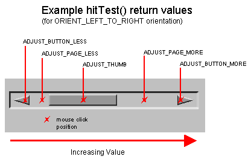

|
HAVi Java APIs 1.1 May 15, 2001 | ||||||||
| PREV CLASS NEXT CLASS | FRAMES NO FRAMES | ||||||||
| SUMMARY: INNER | FIELD | CONSTR | METHOD | DETAIL: FIELD | CONSTR | METHOD | ||||||||
The HAdjustableLook interface is implemented by
all platform looks which support orientable components (i.e. those
components which implement the HOrientable interface. The following platform looks shall
implement this interface:
The HAdjustableLook interface supports pointer
based systems by providing a mechanism of "hit-testing"
which allows the HOrientable component to
determine which part of the on-screen representation has been clicked in, and
to adjust its internal orientable value accordingly (for
HListGroup, the orientable value is the scroll
position of the HListGroup).
The diagram below shows one possible on-screen representation of an
HOrientable component,
with ORIENT_LEFT_TO_RIGHT orientation.
|  |
HLook implementations which implement HAdjustableLook may use the getOrientation method
to determine the appropriate constant to return from hitTest since the correct
constant is dependent on the orientation of the component.
It is a valid implementation option to return ADJUST_NONE from the
hitTest method in all cases.
It is a valid implementation option to never return ADJUST_BUTTON_LESS
and ADJUST_BUTTON_MORE in the case where such active areas are not
presented on screen by the HLook.
| Field Summary | |
static int |
ADJUST_BUTTON_LESS
A constant which may be returned from the hitTest method to indicate that the
pointer was clicked in an adjustment area which indicates that
the orientable value should be decremented by one unit. |
static int |
ADJUST_BUTTON_MORE
A constant which may be returned from the hitTest method to indicate that the
pointer was clicked in an adjustment area which indicates that
the orientable value should be incremented by one unit. |
static int |
ADJUST_NONE
A constant which may be returned from the hitTest method to indicate that the
pointer was not clicked over an active adjustment area. |
static int |
ADJUST_PAGE_LESS
A constant which may be returned from the hitTest method to indicate that the
pointer was clicked in an adjustment area which indicates that
the orientable value should be decremented by one block. |
static int |
ADJUST_PAGE_MORE
A constant which may be returned from the hitTest method to indicate that the
pointer was clicked in an adjustment area which indicates that
the orientable value should be incremented by one block. |
static int |
ADJUST_THUMB
A constant which may be returned from the hitTest method to indicate that the
pointer was clicked in an adjustment area which indicates that
the orientable value should change according to pointer motion
events received by the component, until the pointer button is
released. |
| Method Summary | |
java.lang.Integer |
getValue(HOrientable component,
java.awt.Point pt)
Returns the value of the component which corresponds to the pointer position specified by pt. |
int |
hitTest(HOrientable component,
java.awt.Point pt)
Returns a value which indicates the pointer click position in the on-screen representation of the orientable component. |
| Methods inherited from interface org.havi.ui.HLook |
getInsets, getMaximumSize, getMinimumSize, getPreferredSize, isOpaque, showLook, widgetChanged |
| Field Detail |
public static final int ADJUST_NONE
hitTest method to indicate that the
pointer was not clicked over an active adjustment area.public static final int ADJUST_BUTTON_LESS
hitTest method to indicate that the
pointer was clicked in an adjustment area which indicates that
the orientable value should be decremented by one unit.
Such an area should be drawn with
an arrow pointing towards the minimum end of
the range, according to the orientation as retrieved with getOrientation.
Use of this constant is implementation-specific.
public static final int ADJUST_BUTTON_MORE
hitTest method to indicate that the
pointer was clicked in an adjustment area which indicates that
the orientable value should be incremented by one unit.
Such an area should be drawn with
an arrow pointing towards the maximum end of
the range, according to the orientation as retrieved with getOrientation.
Use of this constant is implementation-specific.
public static final int ADJUST_PAGE_LESS
hitTest method to indicate that the
pointer was clicked in an adjustment area which indicates that
the orientable value should be decremented by one block.
Use of this constant is implementation-specific.
public static final int ADJUST_PAGE_MORE
hitTest method to indicate that the
pointer was clicked in an adjustment area which indicates that
the orientable value should be incremented by one block.
Use of this constant is implementation-specific.
public static final int ADJUST_THUMB
hitTest method to indicate that the
pointer was clicked in an adjustment area which indicates that
the orientable value should change according to pointer motion
events received by the component, until the pointer button is
released.| Method Detail |
public int hitTest(HOrientable component,
java.awt.Point pt)
The behavior of this method in HListGroupLook differs from the behavior of HAdjustableLook.hitTest() in
that if the position belongs to an HListElement of the associated HListGroup, then this method will return the index of that
element. The look will not change the appearance of that element
(eg. by highlighting it). Such a change may only occur due to a
call to HLook.widgetChanged(org.havi.ui.HVisible, org.havi.ui.HChangeData[]).
Note that it is a valid implementation option to always return
ADJUST_NONE.
component - - the HOrientable component for which the hit
position should be calculatedpt - - the pointer click point relative to the upper-left corner
of the specified component.ADJUST_NONE, ADJUST_BUTTON_LESS, ADJUST_PAGE_LESS,
ADJUST_THUMB,
ADJUST_PAGE_MORE or ADJUST_BUTTON_MORE.
public java.lang.Integer getValue(HOrientable component,
java.awt.Point pt)
null.
The look shall not reflect the value returned by this method visibly.
If the component uses the returned value, it will inform the look
by calling widgetChanged().
component - an HOrientable
implemented by an HVisiblept - the position of the mouse-cursor relative to the
upper-left corner of the associated componentnullhitTest(org.havi.ui.HOrientable, java.awt.Point)
|
HAVi Java APIs 1.1 May 15, 2001 | ||||||||
| PREV CLASS NEXT CLASS | FRAMES NO FRAMES | ||||||||
| SUMMARY: INNER | FIELD | CONSTR | METHOD | DETAIL: FIELD | CONSTR | METHOD | ||||||||